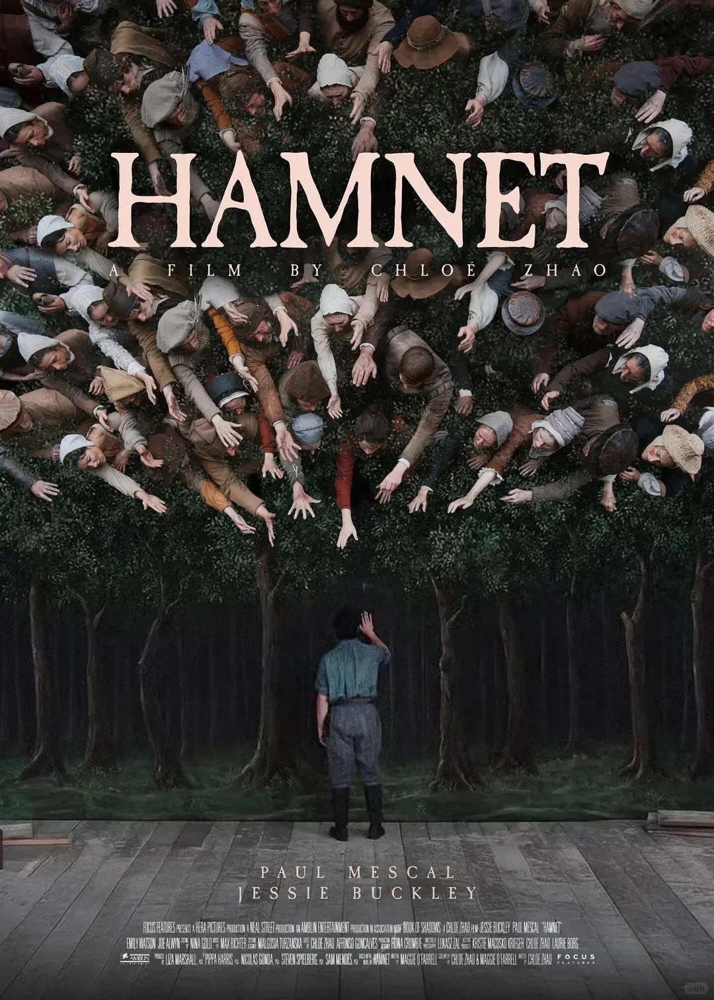

THE BRUNCH
早午餐 / 🌿 烹饪、食物与生活随笔

烹饪这件小事...吗？
2026.7.15
自己做饭，照顾自己的饮食之后，才懂得了一点做饭的珍贵和不易。它首先是繁琐的体力劳动，更是心力的投入...
阅读全文 →
无题
2026.6.14
香港很旧，也固执之极。很多店只收现金，他们自有要坚守的道理和生活方式。这样的老与旧，令人心安...
阅读全文 →
《Hamnet》里的回头
2026
俄耳甫斯前往冥界拯救妻子，这是人类历史上永恒的回头，它镌刻着在世之人的执着...
阅读全文 →